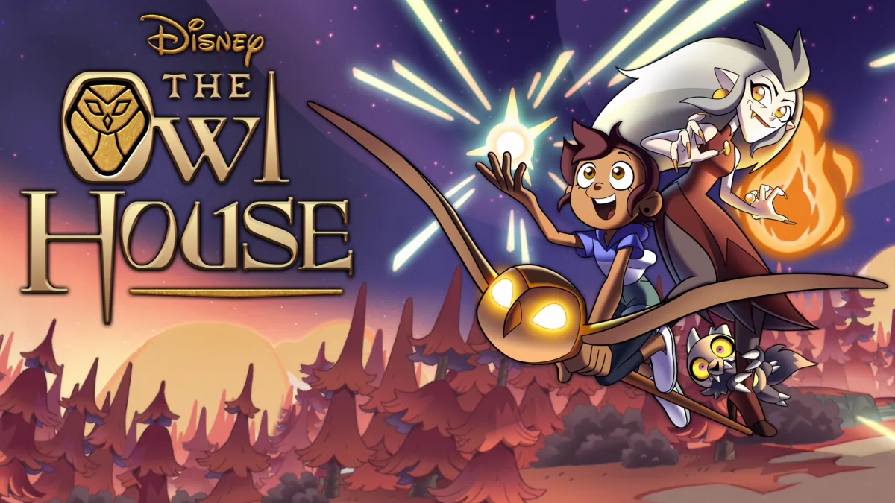

A Few of my Favorite Things
~Snakes~
My favorite animal is the snake. I really like all the variety in their
color, size, patern etc. because it makes them unique. Moreover, I seem to
be drawn to their unsuality and 'creepy' nature. Although, I find them to
be cute, rather then creepy. I also think the different adaptations and
abilities of snakes are quite fascinating.

-|-Learn more about the different kinds of snakes here-|-
~Writing~
Writing is my favorite pastime. I enjoy writing fictitious stories. I like
to use written media to express my stories because I think it is the
easiest and most accessible medium to do so. I also find writing relaxing
and usually write in the evening as a way to unwind. Furthermore, I
believe writing is a good creative outlet.

-|-Learn more about the benefits of writing here-|-
~The Owl House ~
The Owl House is my favorite animated series. Do you enjoy...
- Adventures?
- Magic systems/Witches?
- Fantasy worlds?
- Horror comedies?
...then I believe you too would enjoy the Owl House.
The series is based around the adventures of Luz Noceda
(the Human pictured), Eda Clawthorne
(the Witch pictured) and co. as they do odd tasks around the
Boiling Isles. This ultimately culminates in a quest to save the Isles
from destruction.

I find the animation style to be quite nice and the story intriguing and
suspenseful. I also like most of the characters, which made me enjoy the
series more overall, even with the slower paced episodes.
-|-Learn more about The Owl House here-|-